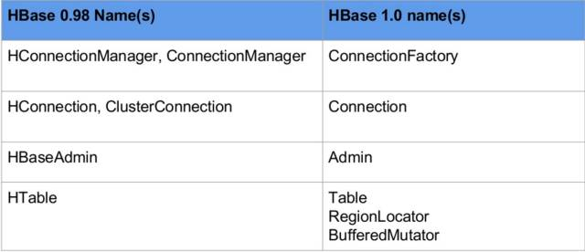
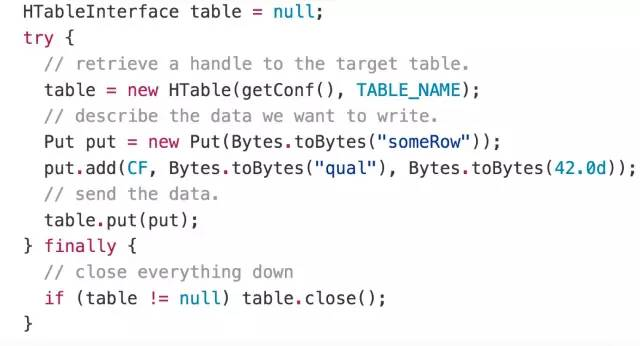
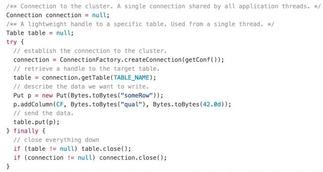
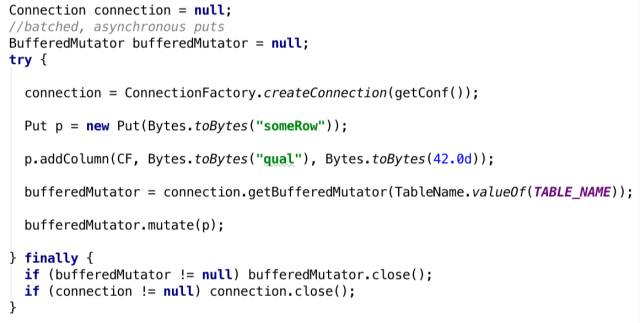
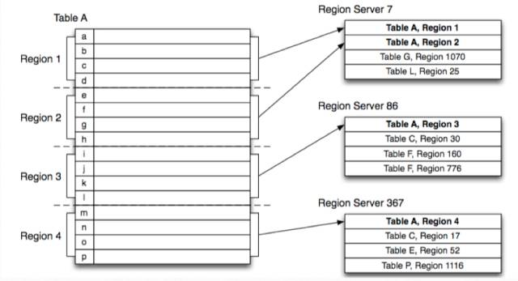
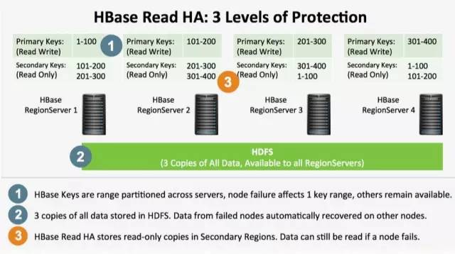
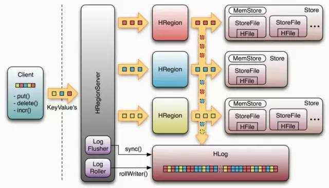
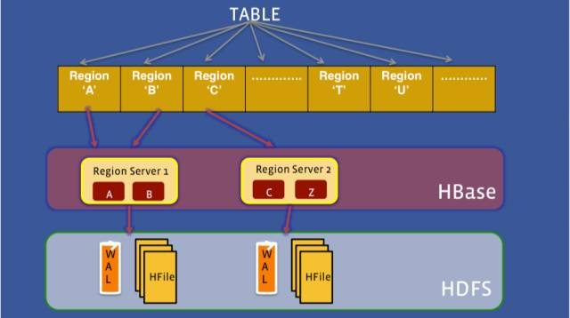
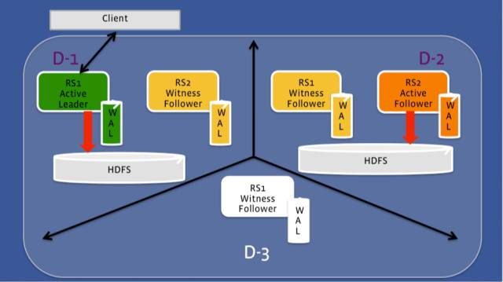

张虔熙，Hulu 网，专注于分布式存储和计算，HBase contributor。
HBase 2015 年技术发展
在 2015 年，HBase 迎来了一个里程碑——HBase 1.0 release，这也代表着 HBase 走向了稳定。
New Interface（更加清晰的接口定义）
旧的 HBase 接口逻辑与传统 JDBC 方式很不相同，新的接口与传统 JDBC 的逻辑更加相像，具有更加清晰的 Connection 管理方式。同时，在旧的接口中，客户端何时将 Put 写到服务端也需要设置，一个 Put 马上写到服务端，还是攒到一批写到服务端，新用户往往对此不太清楚。在新的接口中，引入了 BufferedMutator，可以提供更加高效清晰的写操作。
HBase 0.98 与 HBase 1.0 接口名称对比  举一个例子，旧的 API 写入操作的代码：

新的 API 写入操作的代码：

可以看到，在操作前，首先建立连接，然后拿到一个对应表的句柄，之后再进行一系列操作。以上两个是同步写操作。下面看一下批量异步写入接口：

代码有相应的注释，可见新的接口显得更加清晰。
多个 Region 副本（读操作高可用 HBASE-10070）

如图所示，在 HBase 中，Table 被横向划分为 Region，它是一段数据的管理者，Region 被分发到 RegionServer 上进行管理，一个 Region 只被一个 RegionServer 管理，它的数据存储在 HDFS 上，是可以有多个副本的。
也就是说：管理者 (Region) 只有一个，数据有多个副本。
HBase 的以前实现中，当一台 RegionServer 不可用时，需要数十秒甚至数分钟才可以完成发现和恢复工作，在这段时间内，这台 RegionServer 上的 Region 是不可用的。当一个 Region 不可用时，它需要一段时间才可以被其他 RegionServer 接管。
在最新的实现中，一个 Region 可以有多个副本（Region 是数据的管理者，是实际数据的抽象），分布在多个 RegionServer 上。

特点：
- 有一个主 Region，多个从 Region。
- 只有主 Region 接收写请求，并把数据持久化到 HDFS 上。
- 从 Region 从 HDFS 中读取数据并服务读请求。
- 从 Region 可能会读到脏数据（主 Region 内存中的数据）。
- 读操作可以只读主，或者既可以读主又可读从（可配置）。
这样在主 Region 不可用时，用户仍可以读从 Region 的数据。目前社区在进行的开发：主 Region 异步同步数据到从 Region，从而减少从 Region 缺少的数据量。
Family 粒度的 Flush（减少小文件，优化磁盘 IO，提高读性能 HBASE-10201）
我们先看一下 HBase 的写流程图

数据从客户端写到 RegionServer 上的 Region 后，先写入到内存中，积攒到阈值后写入磁盘，即 LSM-tree 架构。
在以前的实现中，服务端数据从内存刷写到 HDFS 上是 Region 粒度的，Region 下面所有的 Family 都会被 Flush。在很多应用场景中，HBase 中存储的是稀疏数据，在写入一行的数据中，有的 Family 具有值，有的为空，而且不同 Family 中存储的数据大小本身就不同，所以当大的 Family 到达阈值需要刷写数据时，小的 Family 也会跟着刷写，这样会导致很多小文件的产生，影响性能。
在新的实现中，提供了更小粒度的 Flush——Family 级别。它的特点是：
- 更加合理的使用内存的写延迟和聚合功能
- 减少 Compaction 的磁盘IO
- 提高读性能
RPC 读写队列分离（读写隔离，scan 与 get 隔离 HBASE-11355）
之前的实现中，RegionServer 上所有操作共享队列，各种操作互相影响。比如Scan 和 Get，在 RPC Call Queue 中，如果一个大的 Scan 请求排列在 Get 之前，那么 Get 就需要等待之前的 Scan 完成才可以执行，延迟较大。
在现在的实现中，RPC 可以具有多个 Call Queue，同时将它们分配给不同的操作使用，从而实现各种 Put、Scan 和 Get 等操作的隔离。具体配置的参数如下：
hbase.ipc.server.callqueue.handler.factor
hbase.ipc.server.callqueue.read.ratio
hbase.ipc.server.callqueue.scan.ratio
在线调整配置 HBASE-12147
之前的实现中，每次修改配置后都需要重启集群（Rolling Restart）
现在，调整配置后不再需要重启，但是目前只支持一部分配置的在线调整，如 Load Balance 和 Compaction。Hadoop 也已经实现了此功能。
目前社区的工作方向和趋势：
提高可用性
很多应用都要求存储具有高可用性，目前 HBase 实现的还不够优秀，Facebook 的 HydraHBase 是 Facebook 内部维护的 HBase 版本，它使用 Raft 协议管理 Region Server，从而实现高可靠，它的可用率达到 99.999%，Facebook 声称 HydraBase 能将 Facebook 全年的宕机时间缩减到不到 5 分钟。Cloudera Kudu 使用 Raft 协议管理协调 Tablet，从而也可以达到很高的可用率。
HBase 与 HydraHBase 对比：
HBase

HydraBase

对于 HDFS 多存储介质的使用
随着 HDFS 对内存、SSD 的支持和使用，HBase 也会充分使用它们带来的高性能。比如把 WAL 和更多的热数据放到 HDFS 的内存或者 SSD上(三副本)
减少对 ZooKeeper 的使用
Zookeeper 的抖动会对 HBase 造成影响，目前已经完成对 Master 上的 Assignment Manager 的改造，使它不再依赖 ZooKeeper。
堆外内存的使用
Java 管理大内存的方式还不高效，HBase 可以把 Cache 放在堆外，读取的时候不再拉到堆内中，以减少 GC 的影响。
Q & A
1、HBase 集群是不是尽量要读写分离（针对整个集群），我们的集群，随机写入很大，也有随机读，现在碰到随机读请求很不稳定的情况，希望有经验分享一下
HBase 可以支持高吞吐的写请求。对于随机读，如果写操作很多，会造成很多文件来不及 Compact，这会影响随机读的性能。同时，如果 JVM 参数没有经过调优，忙碌的 HBase 集群会有 GC 问题，也会影响随机读的性能。建议可以先调优 JVM 参数和 Cache，也可以引入 BloomFilter 等来优化查询。如果对随机读延迟要求较高，可以考虑分离读写。
2、对于 HBASE 脏读问题，如果只读从 region，是不是就可以避免了？
不能，因为从 Region 的数据就是过时的，主 Region 才是最新的数据。目前 HBase 的实现中，只有读主 Region 才可以获得最新数据，当主 Region 不可用时，如果可以忍受 stale 的数据，则可以读从 Region 来保证可用性。目前高可用实现的还不太好，这也是社区努力的方向之一。
3、修改 HBase 配置文件，但不重启集群是怎么实现的？
Hadoop 实现了一个动态载入配置的框架，修改配置后，激发服务端重新获取配置。具体可见 Hadoop-7001（https://issues.apache.org/jira/browse/HADOOP-7001）
4、HBase 历史数据有好的处理办法吗？设定多少天之前的数据删除或者只对对历史数据进行压缩？
可以设置 TTL 来淘汰历史数据，设置的时间根据具体应用来定。HBase 可以支持 Family 级别设置压缩，原生 HBase 还不能对于一部分行做压缩，可以考虑分表或者其他上层实现。如果历史数据不再需要，可以考虑设置 TTL。
5、写 MapReduce job 从 HBase 中导出某张表的所有数据，默认是几个 region 产生几个 mapper，有什么可以优化提速的办法？
可以让多个 mapper 读取一个 region 中的数据，这时候你需要定制一下 TableInputFormat（适当修改源代码）
6、0.98 版本或以前的 HBase 有什么好的读写分离方案？snapshot 是不是是一种方法？
从 RPC 层面上讲，snapshot 不算读写分离方案，因为所有的读写都进入同一个 Call Queue。从 MVCC 和锁级别等其他方面来看，snapshot 是一种方案。
7、HBase multitenant 方面有解决方案没有？
社区已经有相应的 issue，在明年发布的 2.0 版本中会发布。
8、HBase 不同集群之间的数据同步在 1.0 版本之后有没有更好的解决方案？
目前的解决方案仍然是 copytable + replication。目前社区已经可以解决 bulk load 的数据的同步（之前 bulk load 的数据不能同步到从集群）。
9、基于 HBase 缓存怎么设计比较好，Hulu 是怎么做的？我的项目里用了 Cloudera 自带的 Solr，发现服务器 memory CPU 开销太大。
HBase 的随机读性能不足为在线服务提供缓存服务，可以考虑使用 Redis 或者 Memcache。Solr 应该是做全文索引服务，这应该和 Solr 的实现相关。如果没有设置把 HBase 的表放到内存，HBase 不会消耗很大内存。对于忙碌的 HBase 集群，还是比较消耗 CPU 。
10、社区版 Hadoop 2.6 没有对应的 HBase 版本支持，可以用刚才讲的 HydraBase 替代 HBase 吗？
HBase 1.0 应该是可以运行在 Hadoop 2.6 之上，从个人角度来看，HydraBase可以替代 HBase，Facebook 就是这么实现的，不过 HydraBase 还没有开源。从架构上来讲，HydraBase 使用 Raft 协议管理 RegionServer，写性能可能不如原生 HBase。
11、请问你们是否在生产环境种使用 HBase + Phoenix 的组合来提供复杂快速查询？如果使用了，并发查询的性能如何？
Hulu 内部还没有使用 Phoenix，以前我个人使用过 Phoenix，当时 Phoenix 对于大量并发查询支持的不好，尤其是使用了索引的复杂查询。但是 Phoenix 社区发展很快，现在的情况应该会有好转。
12、Off-heap 做二级 cache 能否提高随机读速度？
可以 。 bucket cache 实现的比较好。目前社区仍在继续优化。对于随机读，还可以增加 BloomFilter 增强性能。
13、HBase 的 Rowkey 如何设计才能既保持无热点又能有序便于 scan？
可以考虑 salt 的方式，在写入的时候为 Rowkey 加随机前缀，比如前缀范围 001 – 100，那么我可以随机为 Rowkey 加上这些前缀来消除热点，在 scan 的时候需要加上所有的前缀（001-100）来 scan，不过这样一个 scan 就要转化为并发的 100 个 scan。